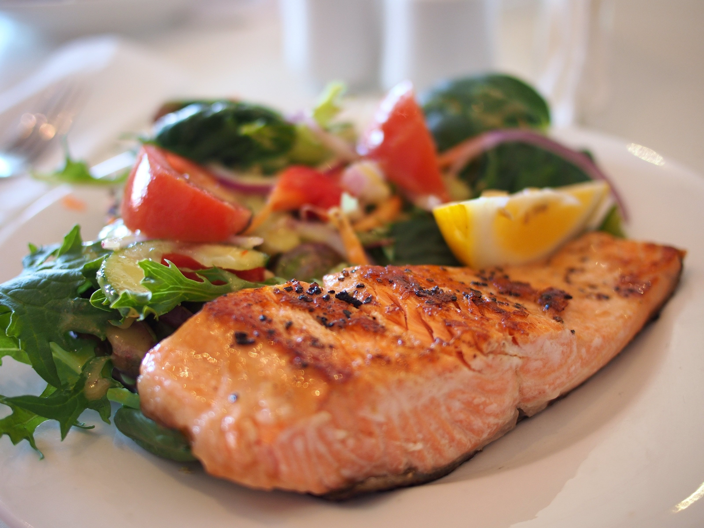
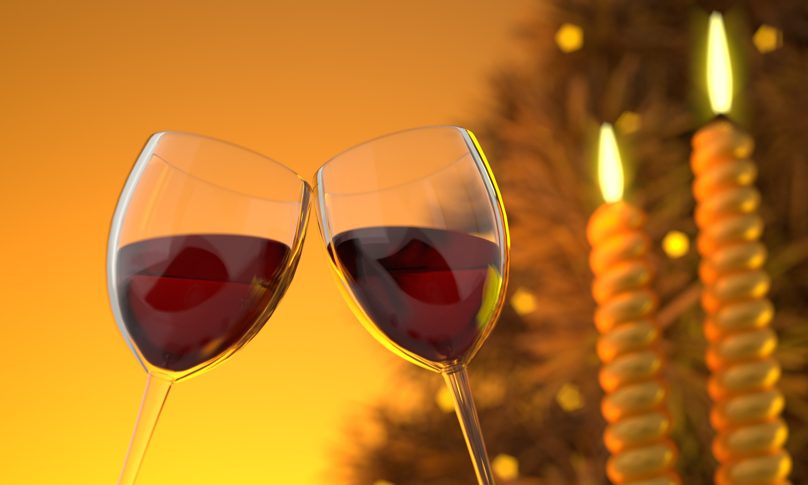

Bienvenue au quai Antique
Bienvenue sur le site de notre restaurant gastronomique situé au cœur de la magnifique ville de Chambéry. Le chef Arnaut Michant vous invite à découvrir un voyage culinaire mémorable.

Le chef Arnaud Michant vous invite au
Bienvenue sur le site de notre restaurant gastronomique situé au cœur de la magnifique ville de Chambéry. Le chef Arnaut Michant vous invite à découvrir un voyage culinaire mémorable.

Notre restaurant gastronomique situé au cœur de la magnifique ville de Chambéry vous invite à découvrir un voyage culinaire mémorable. Le chef Arnaut Michant vous propose une expérience gastronomique unique, mettant en valeur les saveurs locales et les produits de saison. Que vous soyez un amateur de cuisine raffinée ou simplement à la recherche d'une expérience culinaire exceptionnelle, notre équipe est là pour vous offrir un service impeccable et des plats exquis qui éveilleront vos papilles.
Vous pouvez directement réserver votre table en ligne, en choisissant la date et l'heure qui vous conviennent le mieux. Notre équipe se fera un plaisir de vous accueillir et de vous offrir une expérience culinaire exceptionnelle.
